Question
The quadratic $Q(x)=x^2+(k-2)x+(k+3)$ has no real roots.
Find the set of all possible values of $k$.
Hint
Recall that if $P(x)=ax^2+bx+c$ then $P$ has no real roots if and only if the discriminant $b^2-4ac$ is strictly less than zero.
The formula $b^2-4ac < 0$ will give a quadratic inequality in $k$.
Then use the quadratic formula to find the set of all possible values of $k$.
Model Solution
Recall that if $P(x)=ax^2+bx+c$ then $P$ has no real roots if and only if the discriminant $b^2-4ac$ is strictly less than zero.
Since $Q$ has no real roots
$$(k-2)^2-4(k+3) < 0$$
expanding the brackets gives
$$k^2-4k+4-4k-12 < 0$$
$$k^2-8k-8 < 0$$
Now we use the quadratic formula to factorise
$$k^2-8k-8=\left(k-\left(\frac{8+\sqrt{64+32}}{2}\right)\right)\left(k-\left(\frac{8-\sqrt{64+32}}{2}\right)\right)$$
$$k^2-8k-8=\left(k-\left(4+\sqrt{24}\right)\right)\left(k-\left(4-\sqrt{24}\right)\right)$$
Now the graph of $k^2-8k-8$ looks like

where the roots are $4-\sqrt{24}$ and $4+\sqrt{24}$.
Therefore the set of possible values of $k$ for which $k^2-8k-8 < 0$ is $\{k\in \mathbb{R}: k > 4-\sqrt{24}\}\cap\{k\in \mathbb{R} : k < 4+\sqrt{24}\}$.
Answer
- StringQP("")
- StringQP("")